Habitat
ARAIGNÉE DE MER
Maja squinado (Herbst, 1788)
Noms locaux: Araignée; Cangrejo; Koaaricha; Boujniba
Vit au-dessus des fonds de roche ou de sable recouverts
d’algues. Depuis la zone sublittorale jusqu’à 150 m, parfois
même 600 m.
Taille
La taille de sa carapace peut atteindre 25 cm de long et 18 cm
de large.
Alimentation
Se nourrit d’algues, d’oursins, d’étoiles de mer, de
crustacés, de polychètes, de mollusques et de poissons.
Répartition géographique
Mer Méditerranée : de l’Espagne au nord de la Slovénie et
l’Est de la Turquie Océan Atlantique: de l'Irlande à la Guinée


 
